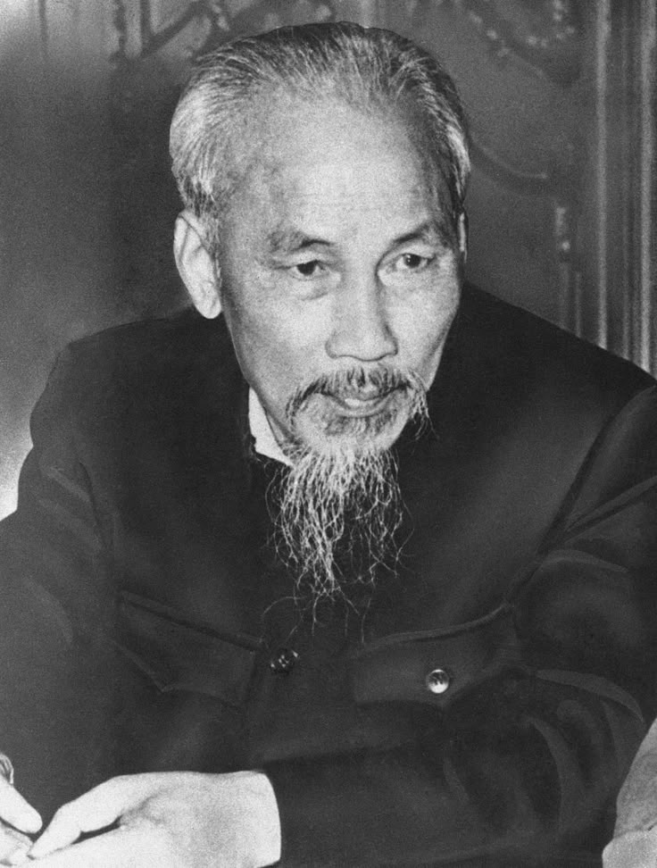

SumberHO CHI MINH adalah pemimpin revolusioner Vietnam yang dikenal sebagai pendiri Republik Demokratik Vietnam dan tokoh utama dalam perjuangan melawan kolonialisme Prancis dan invasi Amerika Serikat. Ia dihormati sebagai Bapak Pendiri Vietnam modern.
Nama Lengkap: Hồ Chí Minh (nama lahir: Nguyễn Sinh Cung) Lahir: 19 Mei 1890, Nghệ An, Indochina Prancis (sekarang Vietnam) Meninggal: 2 September 1969, Hanoi, Vietnam Utara Jabatan: Presiden Republik Demokratik Vietnam (1945–1969) Sekretaris Jenderal Partai Pekerja Vietnam Partai: Partai Pekerja Vietnam (sebelum menjadi Partai Komunis Vietnam)
› Ho Chi Minh lahir dalam keluarga bangsawan kecil. Sejak muda, ia mengembangkan rasa nasionalisme dan keinginan untuk membebaskan Vietnam dari cengkeraman kolonial Prancis. › Pada usia 21, ia berangkat ke luar negeri, menjelajahi banyak negara dan bekerja di berbagai pekerjaan, termasuk di Prancis, Inggris, Amerika Serikat, dan Uni Soviet. › Selama di luar negeri, ia terlibat dalam gerakan-gerakan revolusioner dan mengadopsi ideologi komunis. Perjuangan Kemerdekaan Vietnam 1. Perjuangan Melawan Kolonialisme Prancis › 1919: Mengajukan petisi kepada pemerintah Prancis untuk kemerdekaan Vietnam, tetapi ditolak. › 1930: Mendirikan Indochinese Communist Party (Partai Komunis Indocina), yang kelak menjadi kekuatan utama dalam perjuangan kemerdekaan. › 1941: Kembali ke Vietnam dan memimpin Viet Minh, sebuah organisasi yang berjuang melawan penjajahan Prancis dan Jepang. 2. Kemerdekaan Vietnam dan Pembentukan Republik › 1945: Setelah Jepang kalah dalam Perang Dunia II, Ho Chi Minh mendeklarasikan kemerdekaan Vietnam pada 2 September 1945 dengan membentuk Republik Demokratik Vietnam. › Ho Chi Minh menginspirasi rakyat Vietnam untuk melawan penjajahan dan membangun negara yang bebas. 3. Perang Indochina (1946–1954) › 1946–1954: Perang melawan Prancis yang berakhir dengan kemenangan Vietnam di Pertempuran Dien Bien Phu (1954), yang menyebabkan Prancis menyerah dan Vietnam dibagi menjadi dua: Utara (komunis) dan Selatan (pro-Barat). › Ho Chi Minh menjadi Presiden Vietnam Utara setelah kemenangan tersebut. 4. Perang Vietnam dan Pengaruhnya pada Dunia › Ho Chi Minh mendukung perjuangan Vietnam Selatan yang berkomunis dalam menghadapi Amerika Serikat selama Perang Vietnam (1955–1975). › Ho Chi Minh menjadi simbol dari perjuangan kemerdekaan dan kebebasan untuk banyak negara di dunia yang sedang berjuang melawan kolonialisme dan imperialisme.
› Ho Chi Minh meninggal pada 2 September 1969 sebelum melihat penyatuan Vietnam pada 1975, ketika Vietnam Utara berhasil mengalahkan Vietnam Selatan dan mengakhiri Perang Vietnam. › Meskipun tidak dapat menyaksikan penyatuan negara, Ho Chi Minh tetap menjadi simbol nasionalisme dan revolusi di Vietnam. › Makam Ho Chi Minh di Hanoi menjadi situs bersejarah yang penting bagi rakyat Vietnam.
✅ Dampak Positif: › Memimpin perjuangan kemerdekaan Vietnam dan menjadi simbol perjuangan anti-kolonialisme. › Berhasil mengintegrasikan berbagai faksi di Vietnam untuk melawan penjajahan Prancis dan imperialisme Barat. › Ho Chi Minh dihormati sebagai Bapak Bangsa Vietnam. ❌ Dampak Negatif: › Setelah kemerdekaan, Vietnam mengalami kerusuhan internal dan perpecahan yang menyebabkan Perang Vietnam. › Kebijakan ekonomi dan sosialnya, meskipun dipandang idealis, menyebabkan kesulitan dalam pembangunan negara pasca-perang. Ho Chi Minh dikenang sebagai pahlawan nasional Vietnam dan tokoh utama dalam perjuangan untuk kemerdekaan dan penyatuan Vietnam.